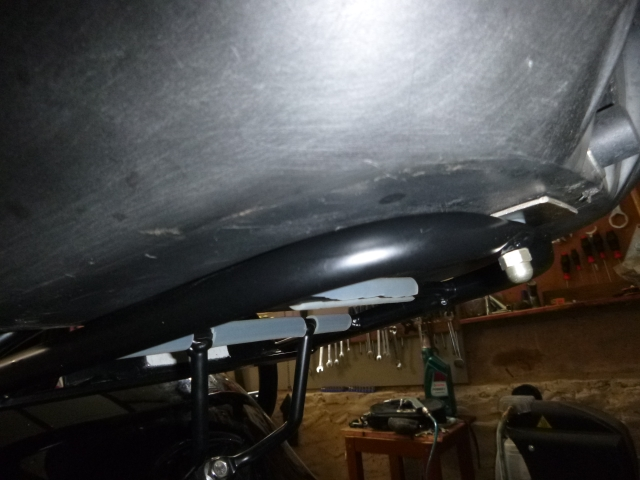
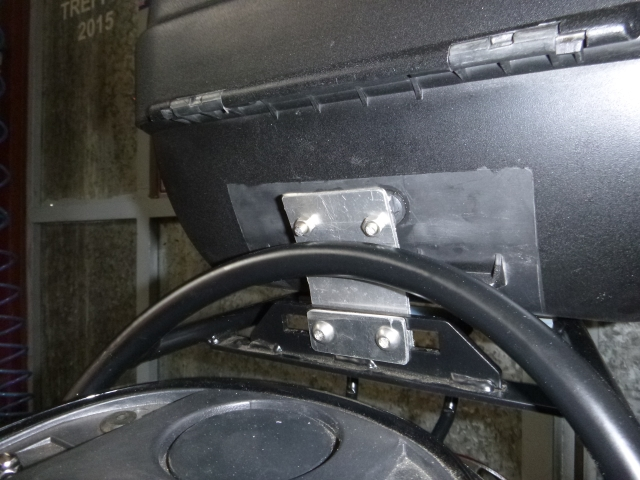
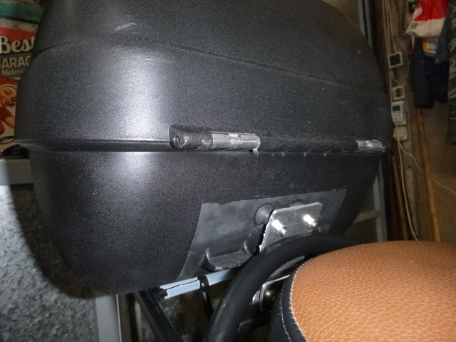
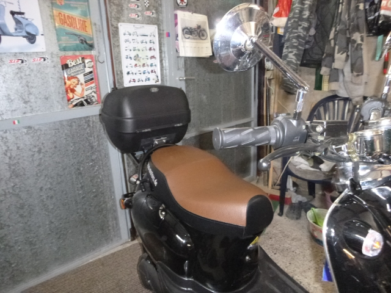
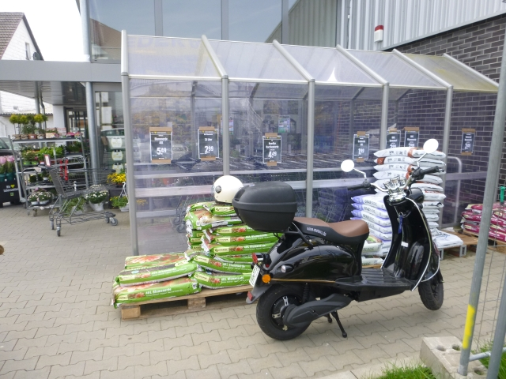
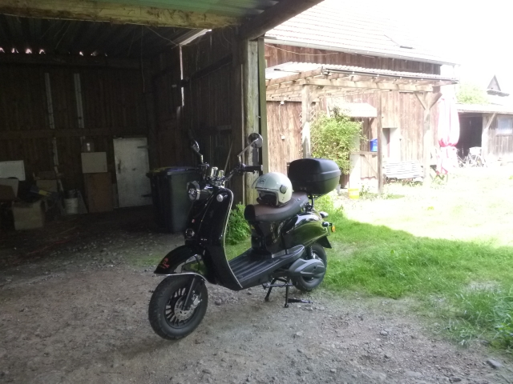
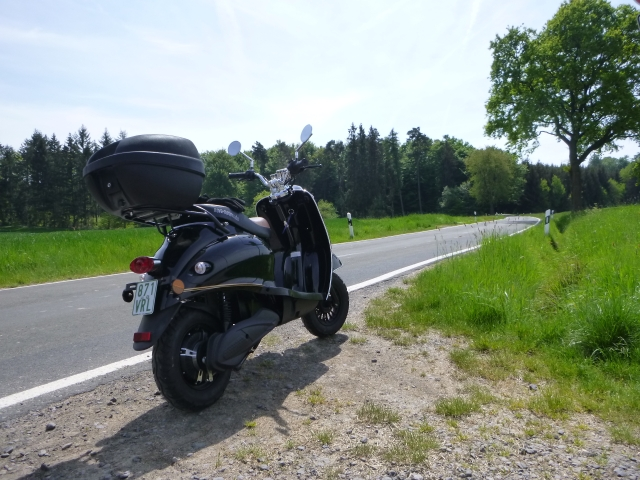
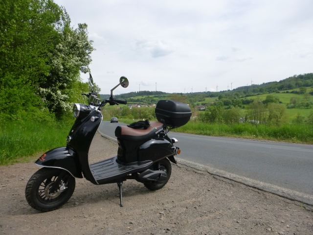
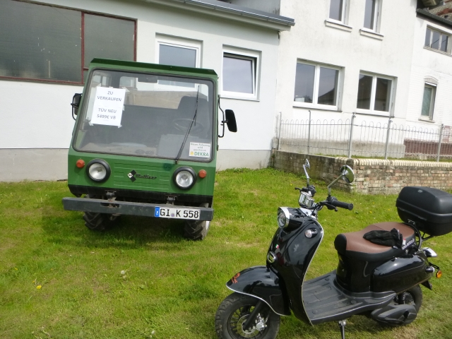

In leichter Abwandlung eines Gedichtes von Wilhelm Busch muss ich es mal aussprechen: “E-Rollern wird oft nicht schön empfunden, wenn es mit Geräusch verbunden.”
Und das muss ich unterschreiben, leider. Denn so herrlich und fast lautlos mein kleiner eRetro Star durch den Vogelsberg stromert, so macht er auf den schlechten Straßen meiner Heimat oft unschöne Geräusche. Die Wurzel des Übels ist dabei nicht der Roller selbst, sondern das von mir liebevoll aufgearbeitete und montierte Topcase. Denn das klappert!
Als Ursache habe ich schnell die Halterung und die Befestigung der Box an derselben ausgemacht. Die hintere Klemmung der Box hat Luft in der Halterung und die vordere Befestigung wackelt und klappert im Schloß zur Halterung. Naja, ist eben ein billiges und altes, ausgenüdeltes Teil.
Aber ich akzeptiere die Klapperei nicht und gehe die Sache an. Als erstes verschwindet der Topcase-Träger und ich überlege mir, wie ich das Topcase selbst am Gepäckträger befestigen kann. Dazu bohre ich das Schloß der Halterung aus, setze eine Buchse mit einem Querloch ein und kann nun das Topcase hinten mit einem vorhandenen Gewinde im Gepäckträger verbinden. Da klappert schon mal nix mehr.
Für die hintere Befestigung muss ich eine Aluplatte bauen, diese ein wenig biegen und dann wird sie verschiebbar mit Schrauben M8 am Gepäcktrager verbaut. Die Verbindung zum Topcase stelle ich mittels zweier Silentblocks her. Die halten das Topcase stabil fest, können aber dennoch ein wenig schwingen.
Obwohl nicht wirklich schwiering, kostet mich die gesamte Aktion 3 Stunden mit Messen, Sägen, Bohren, Feilen, Biegen und Montieren. Und jetzt werde ich das Konstrukt auf einer Probefahrt einem Härtetest auf den schlechtesten Straßen hier am Rande des Vogelsberges unterziehen.

Die hintere Befestigung mit einer massiven Schraube und Bandgummi als Zwischenlage.

Vorn die Alulasche, massiv verschraubt am Gepäckträger und schwingend mit dem Topcase verbunden.

Ursprünglich dienten die Silentblocks mal der Befestigung des Auspufftopfes am R4.

Fertig - wackelt nicht, klappert nicht.

Testfahrt zum Einkauf beim Fuchs. Der Einkauf füllt das Topcase komplett und enthält u.a. auch 4 Liter Milch. Gewicht ist also vorhanden.

Die ersten 6 Kilometer nach Ilsdorf sind schon sehr vielversprechend.

Aber der echte Härtetest folgt erst jetzt: 5 Kilometer über eine des schlechtesten Straßen im Kreisgebiet, die zwischen Klein-Eichen und Ilsdorf. Aber vom Topcase kommt kein Laut mehr. Der Roller selbst allerdings klappert hin und wieder aus Richtung des Vorderrad-Schutzbleches und der beiden Seitenbacken. Das ist zwar harmlos und quasi nichts im Vergleich zu vorher, aber irgendwie werde ich das auch noch eliminieren. Ein Elektro-Roller muss einfach leise.sein

Heute bewege ich mich ausschliesslich in der Fahrstufe III, also der schnellsten. Damit ist der Roller deutlich spritziger und verbraucht zumindest heute auch nicht mehr Akku-Kapazität als in Stufe II. Seltsam. Jetzt wage ich mich sogar mal bis hinter Wohnfeld und muss dabei ganz ordentliche Steigungen bewältigen.

Und was sehe ich da: Ein Hanomag zu verkaufen? Aber nein, es ist das östliche Pendant dazu, ein IFA Multicar. Gefällt mir sehr gut.
Nach 35 Kilometern in Stufe III bin ich dann wieder daheim. Die Batterieanzeige steht erneut auf knapp 50 % Restkapazität, was, wie wir alle wissen, nicht stimmt.